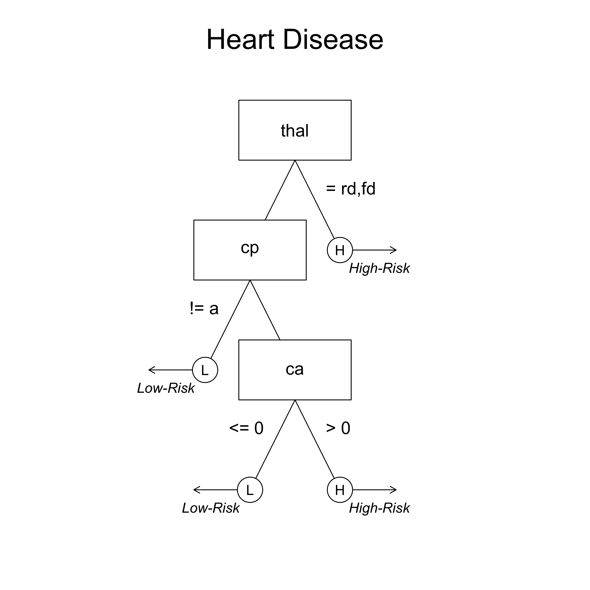
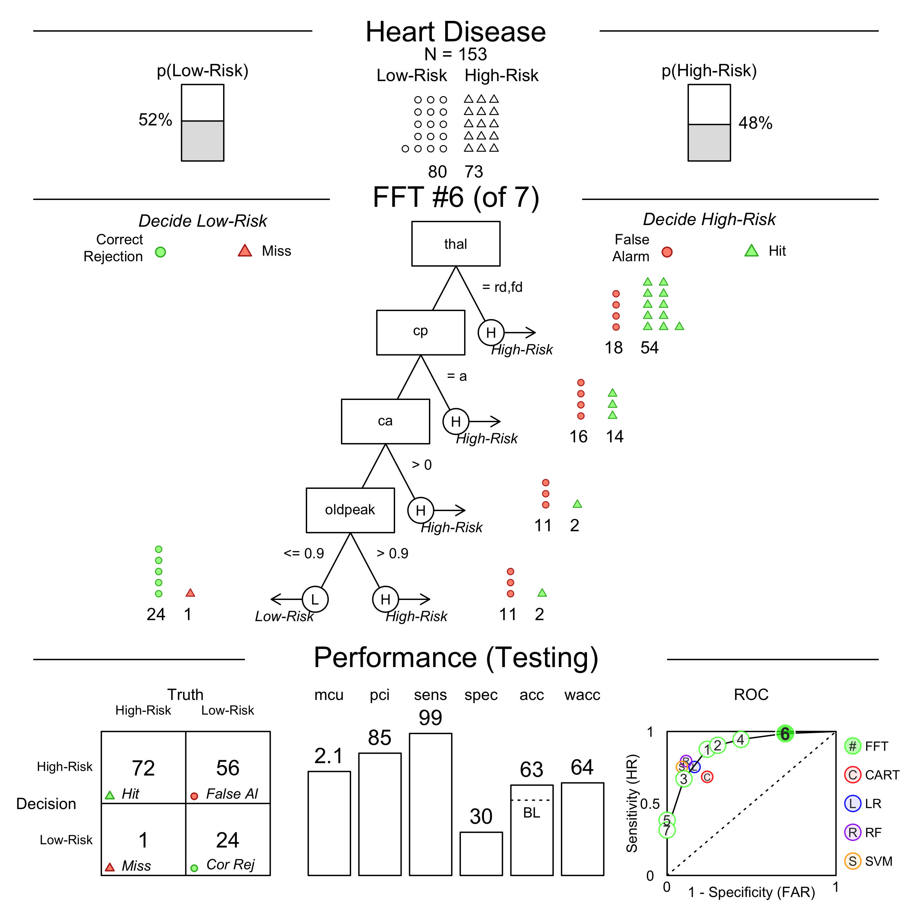
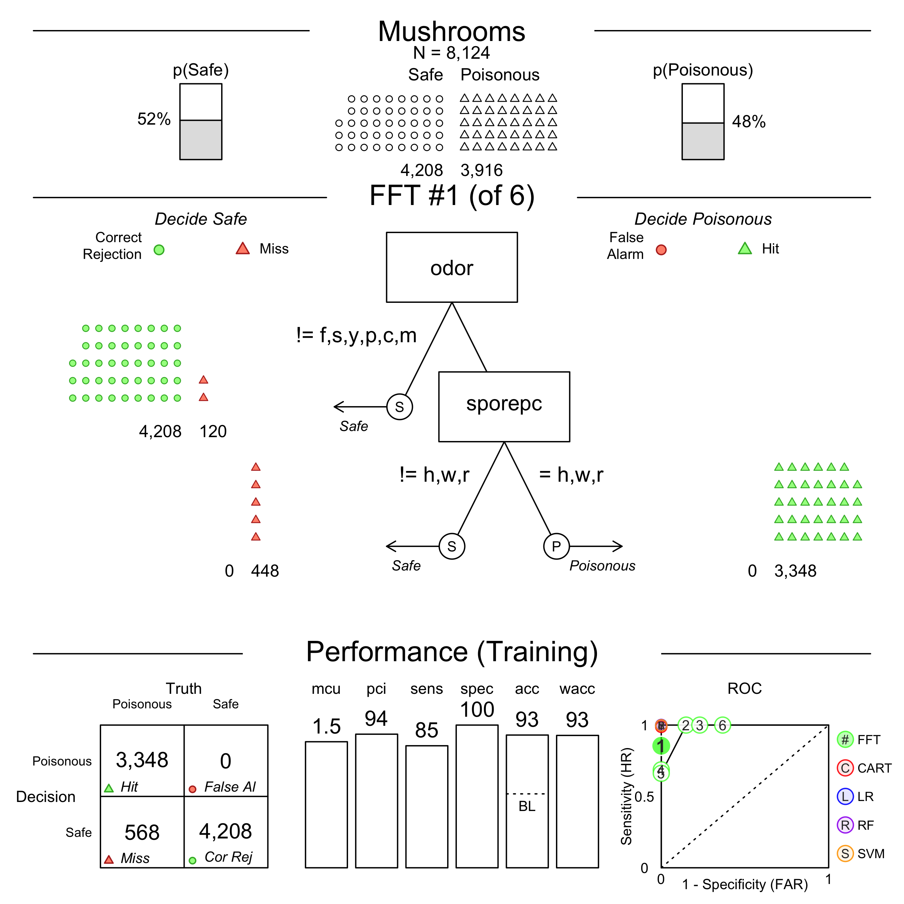
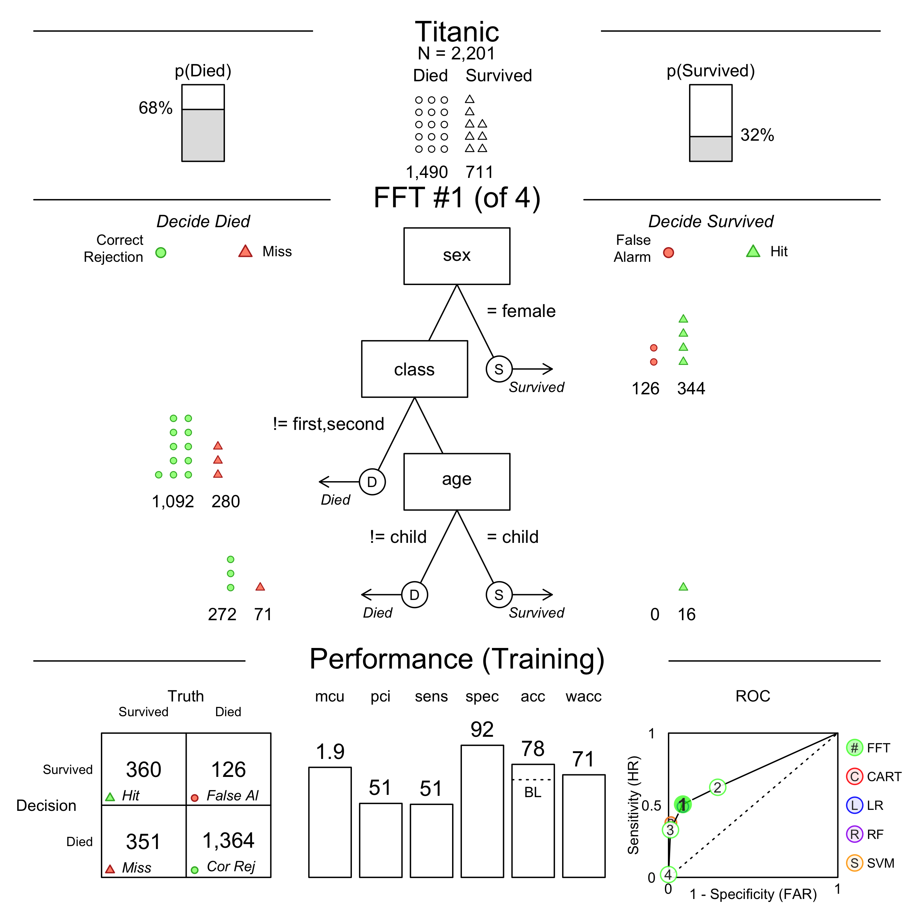
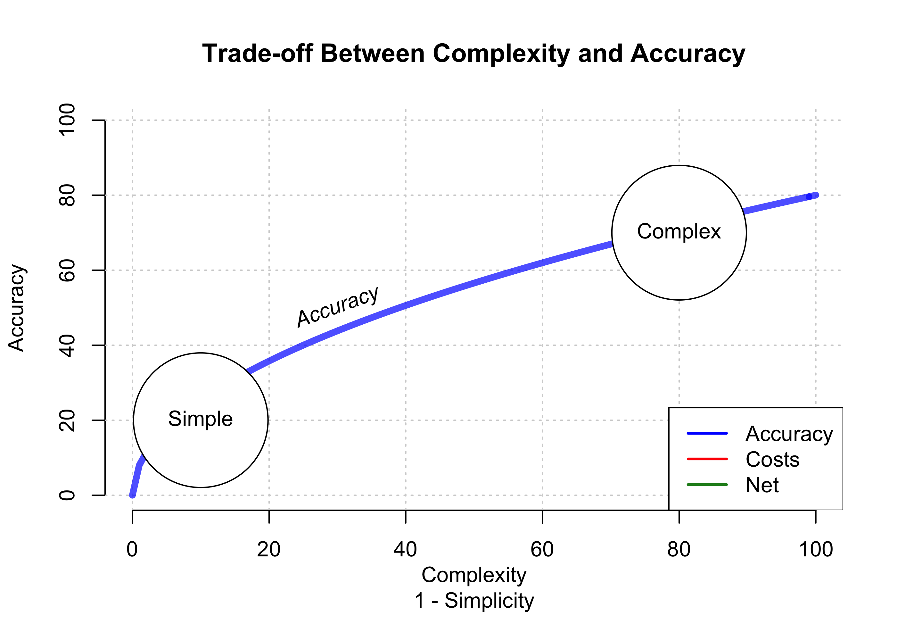
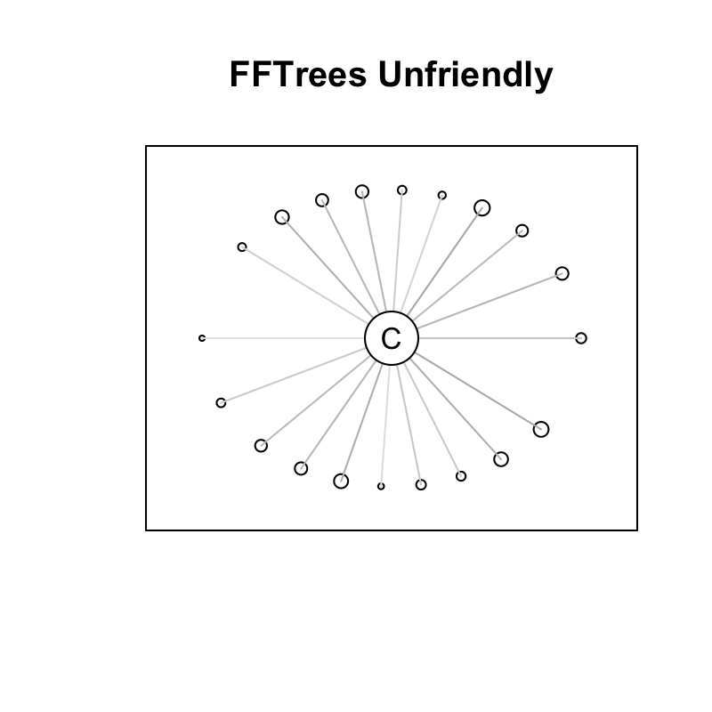
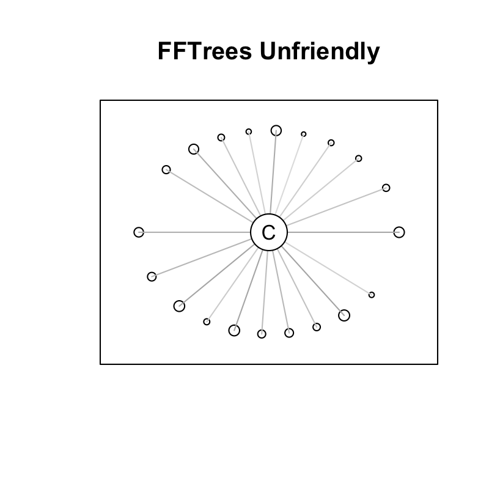
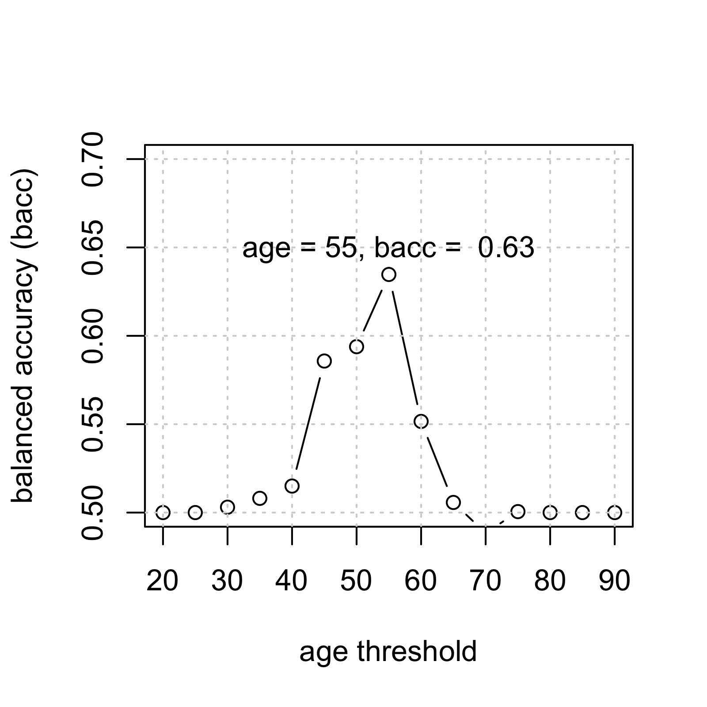

FFTrees
An R package to create, visualize, and evaluate fast-and-frugal decision trees
Nathaniel Phillips, Economic Psychology, University of Basel, Switzerland
useR! 2017, Brussels
Limited Time. Limited information. How can one make good decisions?

Cook County Hospital, 1996

"As the city’s principal public hospital, Cook County was the place of last resort for the hundreds of thousands of Chicagoans without health insurance. Resources were stretched to the limit. The hospital’s cavernous wards were built for another century. There were no private rooms, and patients were separated by flimsy plywood dividers. [...] Doctors once trained a homeless man to do routine lab tests because there was no one else available." Malcolm Gladwell, Blink.

Heart Attack Diagnosis
- How do doctors make decisions? Experience. Intuition. Clinical judgment

- In a Michigan hospital, doctors sent 90% of patients to the ICU, although only 25% were actually having a heart attack.
Emergency Room Solution: a fast-and-frugal tree (FFT)
- A fast-and-frugal decision tree (FFT) developed by Green & Mehr (1997).
- Tree cut the false-alarm rate in half
- Tree is transparent, easy to modify, and accepted by physicians (unlike regression).
What is a fast-and-frugal decision tree (FFT)?

Green & Mehr (1997) "What alters physicians' decisions to admit to the coronary care unit?"
Fast-and-Frugal Decision Tree (FFT)
- An FFT is a decision tree with exactly two branches from each node, where one, or both, of the branches are exit branches (Martignon et al., 2008)

Examples of FFTs

FFTrees
FFTreesAn easy-to-use R package to create, visualize, and evaluate fast-and-frugal decision trees.
install.packages("FFTrees")
library("FFTrees")
a
/ \
0 b
/ \
0 1
FFTrees v1.3.2

Example: Heart Disease
| age | sex | cp | trestbps | chol | fbs | restecg | thalach | exang | oldpeak | slope | ca | thal | diagnosis |
|---|---|---|---|---|---|---|---|---|---|---|---|---|---|
| 63 | 1 | ta | 145 | 233 | 1 | hypertrophy | 150 | 0 | 2.3 | down | 0 | fd | 0 |
| 67 | 1 | a | 160 | 286 | 0 | hypertrophy | 108 | 1 | 1.5 | flat | 3 | normal | 1 |
| 67 | 1 | a | 120 | 229 | 0 | hypertrophy | 129 | 1 | 2.6 | flat | 2 | rd | 1 |
| 37 | 1 | np | 130 | 250 | 0 | normal | 187 | 0 | 3.5 | down | 0 | normal | 0 |
| 41 | 0 | aa | 130 | 204 | 0 | hypertrophy | 172 | 0 | 1.4 | up | 0 | normal | 0 |
| 56 | 1 | aa | 120 | 236 | 0 | normal | 178 | 0 | 0.8 | up | 0 | normal | 0 |
- Goal: Predict diagnosis as a function of cues.
- Regression: 6 significant cues (sex, cp, thalach, exang, oldpeak, ca)
3 Steps to creating FFTs with FFTrees
# Step 0: Install FFTrees (v.1.3.2)
install.packages("FFTrees")
# Step 1: Load the package
library("FFTrees")
# Step 2: Create an fft decision model with FFTrees
heart.fft <- FFTrees(formula = diagnosis ~.,
data = heart.train,
data.test = heart.test,
main = "Heart Disease",
decision.labels = c("Low-Risk", "High-Risk"))
Print an FFTrees object
heart.fft
Heart Disease
7 FFTs predicting diagnosis (Low-Risk v High-Risk)
FFT #1 uses 3 cues: {thal,cp,ca}
train test
cases :n 150.00 153.00
speed :mcu 1.74 1.73
frugality :pci 0.88 0.88
accuracy :acc 0.80 0.82
weighted :wacc 0.80 0.82
sensitivity :sens 0.82 0.88
specificity :spec 0.79 0.76
pars: algorithm = 'ifan', goal = 'wacc', goal.chase = 'bacc', sens.w = 0.5
Print a tree "in words"
inwords(heart.fft)
[1] "If thal = {rd,fd}, predict High-Risk"
[2] "If cp != {a}, predict Low-Risk"
[3] "If ca <= 0, predict Low-Risk, otherwise, if ca > 0, predict High-Risk"
| cue | definition | Possible values |
|---|---|---|
| thal: thallium scintigraphy | How well blood flows to the heart | normal (n)fixed defect (fd), or reversible defect (rd) |
| cp: chest pain type | Type of chest pain | typical angina (ta), atypical angina (aa), non-anginal pain (np), or asymptomatic (a). |
| ca: | number of major vessels colored by flourosopy | 0, 1, 2, 3 |
plot(heart.fft, stats = FALSE)

plot(heart.fft) # Training data

plot(heart.fft, data = "test") # Testing data


plot(heart.fft, data = "test", tree = 6) # Testing data, tree 6

plot(heart.fft, data = "test", tree = 7) # Testing data, tree 7

Generalizing FFTrees
- The
FFTreespackage can be used with any dataset with a binary criterion. - Simulation: 10 diverse datasets taken from the UCI Machine Learning Database.
- FFTrees vs. regression, Naive Bayes, Rnd For and more
How well can a simple fast-and-frugal tree predict data?

Speed and frugality

Speed and frugality

Training (balanced) accuracy (10 datasets)
Testing (balanced) accuracy (10 datasets)


Mushrooms

Breast Cancer

Titanic

Additional functions and arguments

Define an FFT manually
# Create an FFT manually
FFTrees(formula = diagnosis ~.,
data = heart.train,
my.tree = "If chol > 350, predict True.
If cp != {a}, predict False.
If age <= 35, predict False.
Otherwise, predict True")

Include cue costs
heart.cost
| cue | cost | |
|---|---|---|
| 2 | sex | 1.0 |
| 13 | thal | 102.9 |
| 3 | cp | 1.0 |
| 12 | ca | 100.9 |
| 4 | trestbps | 1.0 |
# Original FFT (without costs)
FFTrees(formula = diagnosis ~.,
data = heart.train)
Original FFT (without costs)
Include cue costs
heart.cost
| cue | cost | |
|---|---|---|
| 2 | sex | 1.0 |
| 13 | thal | 102.9 |
| 3 | cp | 1.0 |
| 12 | ca | 100.9 |
| 4 | trestbps | 1.0 |
# Create an FFT that is cheap
FFTrees(formula = diagnosis ~.,
data = heart.train,
cost.cues = heart.cost,
cost.outcomes = c(0, 200, 100, 0))
Cheap FFT

Create a forest of FFTs
heart.fff <- FFForest(formula = diagnosis ~., data = heartdisease)
Conclusion
Why use FFTrees?
- See how, and how well, a crazy simple, transparent fast-and-frugal tree can make sense of your data.
- You might be surprised by how well it works, and generate new insights.
library("FFTrees")
a
/ \
0 b
/ \
0 1
FFTrees v1.3.2

Publication and Collaborators
Publication
Phillips, Nathaniel D., Neth, Hansjoerg, Woike, Jan & Gaissmeier, Wolfgang. (2017). FFTrees: A toolbox to create, visualize and evaluate fast-and-frugal decision trees. Judgment and Decision Making.
Collaborators
- Wolfgang Gaissmaier (University of Konstanz)
- Hansjoerg Neth (University of Konstanz)
- Jan Woike (MPI for Human Development)
FFTrees
- FFTrees:
install.packages("FFTrees"), http://www.github.com/ndphillips/FFTrees
My Links
- This presentation: https://ndphillips.github.io/useRJuly2017
- Website: https://ndphillips.github.io
- Email: Nathaniel.D.Phillips.is@gmail.com
FFTrees Unfriendly Data
- Many cues, weak validity, ind errors

FFTrees Friendly Data
- Few cues with high validity, dep errors.
Tree Building Algorithm
- For each cue (aka, feature), calculate a threshold that maximizes
goal.chase(default: balanced accuracy) - Rank order cues by
goal.chase - Select the top
max.levels(default: 4) - Create a "fan" of all possible trees with all possible exit directions.
- Select the tree that maximizes
goal(default: balanced accuracy)


plot(heart.fft, what = "cues")

When should I consider an FFT?

Conclusion

Conclusion

Conclusion

How accurate can FFTs be?

How accurate can FFTs be?

Forest Fires (Training)
Forest Fires (Testing)

Forest Fires (Testing)